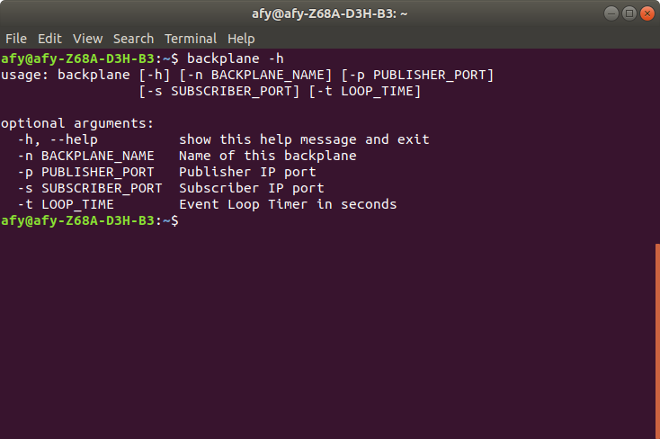
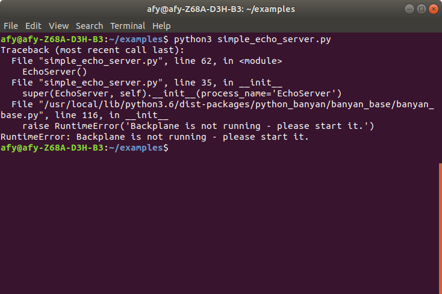

Introduction To The Tutorials
Learning By Example
The tutorials included with this guide provide samples of simple working applications. The tutorials help demonstrate Python Banyan's features and the set of utilities that are part of the python-banyan package.
The Key Elements of Python Banyan
There are two key components of the Banyan Framework, the backplane that acts as a communication hub, and the Banyan Components where you implement your design. This section will discuss these two elements.
The Banyan Backplane
When you install Python Banyan, an executable file called backplane is automatically installed on your computer. The backplane is implemented as a ZeroMQ device called a Forwarder.
When connecting to the backplane, all components utilize common, well-known IP addresses and port numbers. As a result, routing is greatly simplified, and in most cases, eliminates the need for maintaining a routing table.
Because a Banyan component automatically attempts to "plug" itself into the backplane when first invoked, the backplane must be started before starting any other components.
If you forget to first start the backplane, the component will raise a RunTimeError exception.
In general, a Banyan application uses a single instance of the backplane. However, it is possible to have multiple backplanes running in a single application. Using multiple backplanes will be covered in a later section.
Since the backplane is not usually modified by the user, its code will not be discussed here, but if you wish, you may view the backplane source code here.
Starting the Backplane
To start the backplane, open a command or terminal window and type:
backplane

After starting the backplane, you will see a standard Python Banyan header for the Backplane.
The backplane name is displayed. The default is "Backplane," and usually, this default is accepted. You may change it using a command-line option described below
The backplane always uses the computer's IP address on which it is run and is not user-configurable. This address is auto-discovered.
The Subscriber and Publisher Ports are also displayed. For applications that will run on a single computer, the default ports should be accepted. These values are user-configurable, in case you need to modify them.
The Loop Time sets the iteration time for the backplane's idle loop. Usually, the default should be accepted, but it can be altered to fine-tune the application's CPU utilization.
The Backplane's Command-Line Options
To see the command-line options for the backplane type:
backplane -h

To specify a command-line option, provide the option and its parameter value. Multiple options may be set if desired.
backplane -n MyBackplane -p 12345 -s 54321 -t .01
The parameters consisting of backplane name, the publisher port, the subscriber port, and loop time have all been customized in the example above.
Always Start The Backplane First
A Python Banyan component expects the backplane to be running when it is instantiated. If you forget to start the backplane, the component will raise a RunTimeException.

Python Banyan Base Class And Its Methods
Most Python Banyan components need only to connect to a single Backplane and are built by inheriting from the banyan_base base class, banyan_base.py.
If you need to create your application using multiple backplanes (a rare occurrence), please refer to this section for a discussion of the banyan_base_multi class.
There is also a Python asyncio version of the base class called banyan_base_aio.py.
The BanyanBase Class Methods
The methods of the BanyanBase class are discussed in detail below.
An "executive summary" of the methods follows:
-
_init_ - This method initializes the class. A derived class often overrides this method to add additional initialization parameters as well as being a convenient place to add subscription topics. The Banyan event loop, called receive_loop, may be started within this method. If you choose to start the receive_loop within __init__, it should be called as the last line of the overridden method, since a call to receive_loop will not return.
-
set_subscriber_topic - This method is usually not overridden and is used as-is. This method is called for each subscription topic.
-
publish_payload - This method is usually not overridden and used as-is. This method will format the message and send it to the backplane.
-
receive_loop - This method is usually not overridden and used as-is. This method waits to receive messages that have topics that have been subscribed to. When a message is received, it calls the incoming_message_processing method.
-
incoming_message_processing - This method must be overridden to handle incoming messages.
-
clean_up - This method may be overridden to add any additional clean-up for terminating a component.
To better understand the base class, let's look at the code line by line. You can skip this section and move on to the examples and return later if you need a more detailed explanation of the base class.
Lines 1 through 19 displays the license information.
1 """
2 banyan_base.py
3
4 Copyright (c) 2016-2019 Alan Yorinks All right reserved.
5
6 Python Banyan is free software; you can redistribute it and/or
7 modify it under the terms of the GNU AFFERO GENERAL PUBLIC LICENSE
8 Version 3 as published by the Free Software Foundation; either
9 or (at your option) any later version.
10 This library is distributed in the hope that it will be useful,
11 but WITHOUT ANY WARRANTY; without even the implied warranty of
12 MERCHANTABILITY or FITNESS FOR A PARTICULAR PURPOSE. See the GNU
13 General Public License for more details.
14
15 You should have received a copy of the GNU AFFERO GENERAL PUBLIC LICENSE
16 along with this library; if not, write to the Free Software
17 Foundation, Inc., 51 Franklin St, Fifth Floor, Boston, MA 02110-1301 USA
18
19 """
Lines 20 through 36 lists the packages required by banyan_base.py. All required packages are automatically installed when the Python Banyan distribution is first installed.
Note that lines 25 through 27 are commented out. A template for creating command-line options for your component is provided at the bottom of the file. This is totally optional, but if you wish to use the template, you will need to uncomment outlines 25 through 27.
The template will be discussed at the end of this discussion.
20 from __future__ import unicode_literals
21
22 # Use argparse and signal if you wish to implement the argparse
23 # code located at the bottom of this file.
24
25 # import argparse
26 # import signal
27 # import sys
28
29 import socket
30 import time
31 import umsgpack
32 import msgpack
33 import msgpack_numpy as m
34 import zmq
35 import psutil
36
Line 38 declares the BanyanBase class. It inherits from object to keep the class Python 2 compatible.
Lines 41 through 49 provide a brief description of the class.
Line 53 shows the import line used to import this class into your component. The examples will demonstrate how to import BanyanBase.
37
38 class BanyanBase(object):
39 """
40
41 This is the base class for all Python Banyan components,
42 encapsulating and acting as an abstraction layer for zeromq and message pack
43 functionality.
44
45 Banyan components are derived by inheriting from this class and
46 overriding its methods as necessary.
47
48 Banyan components have the capability to both publish and subscribe to user
49 defined messages using the Banyan backplane.
50
51 To import into the derived class use:
52
53 from python_banyan.banyan_base import BanyanBase
54
55 """
The base class consists of 6 methods, and the following is a discussion of each of the methods.
__init__
The __init__ method is overwritten as needed. A subscription to specific topics is often established in this method by calling set_subscriber_topic for each topic.
57 def __init__(self, back_plane_ip_address=None, subscriber_port='43125',
58 publisher_port='43124', process_name='None', loop_time=.1, numpy=False,
59 external_message_processor=None, receive_loop_idle_addition=None,
60 connect_time=0.3):
61 """
62 The __init__ method sets up all the ZeroMQ "plumbing"
Line 57 through 59 constitutes the parameter list for the __init__ method. Notice that all of the parameters contain default values. In most cases accepting the defaults is all that you need.
Lines 64 through 85 documents each the parameters and are discussed below,
back_plane_ip_address
The default for this parameter is None. The component will discover the local computer's IP address and assume that the backplane is also running on this computer. If the component is running on a computer other than the one that the backplane is running on. In that case, this parameter will need to match the IP address of the running backplane.
64 :param back_plane_ip_address: banyan_base back_planeIP Address -
65 if not specified, it will be set to the
66 local computer.
subscriber and publisher ports
These are default IP ports dictated by those set for the backplane. Usually, the defaults are accepted. However, they may be modified if there are any port conflicts, or if you are running in a system that has more than one backplane running on a computer.
68 :param subscriber_port: banyan_base back plane subscriber port.
69 This must match that of the banyan_base backplane
70
71 :param publisher_port: banyan_base back plane publisher port.
72 This must match that of the banyan_base backplane.
73
process_name
This sets the name shown in the component's console header for identification purposes. If not specified, the name of the component will be 'None'.
74 :param process_name: Component identifier in banner at component startup.
75
loop_time
A Banyan component continuously checks for any incoming messages. If no messages are available, then the component will sleep for the specified loop time. The smaller the number, the greater the CPU utilization for the component.
76 :param loop_time: Receive loop sleep time.
77
numpy
If the component requires Numpy data handling, then set this parameter to True to efficiently serialize the data.
78 :param numpy: Set true if you wish to include numpy matrices in your messages.
79
external_message_processor
Typically all incoming messages are handled within the Banyan component itself. If specified, message processing will be done outside of the component and act similarly to a callback.
80 :param external_message_processor: external method to process messages
81
receive_loop_idle_addition
Usually, the receive idle loop is executed when no messages are present. If you wish to perform some additional processing during idle time, set this parameter to the function or method you would like to call. The function or method should be non-blocking.
82 :param receive_loop_idle_addition: an external method called in the idle section
83 of the receive loop
84 """
connect_time
This parameter allows for the connection between the component and backplane to complete. It prevents a race condition from occurring when trying to publish a message before the connection to the backplane has been established.
85 :param connect_time: a short delay to allow the component to connect to the backplane
The actual class code for the method follows the parameter documentation strings.
Line 89 allows for the possibility of multiple inheritances. An example might be the need to import the threading module in addition to BanyanBase.
88 # call to super allows this class to be used in multiple inheritance scenarios when needed
89 super(BanyanBase, self).__init__()
90
Line 91 declares a flag which is set when the check for a running backplane takes place.
Lines 93 through 97 assign the input parameters to instance variables.
91 self.backplane_exists = False
92
93 self.back_plane_ip_address = None
94 self.numpy = numpy
95 self.external_message_processor = external_message_processor
96 self.receive_loop_idle_addition = receive_loop_idle_addition
97 self.connect_time = connect_time
Lines 99 through 101 are used to enable the numpy version of messagepack if the numpy parameter was set to True.
99 # if using numpy apply the msgpack_numpy monkey patch
100 if numpy:
101 m.patch()
Lines 103 through 105 set the IP address for the backplane if one was specified.
If no backplane IP address was specified, Lines 107 through 121 checks to see if a backplane is currently running. If a backplane is running, the self.backplane_exists flag is set to True.
NOTE: When the backplane is running on a remote computer, the local component cannot detect the remote backplane's presence. Therefore, it is the user's responsibility to check for a running remote backplane in this case.
103 # If no back plane address was specified, determine the IP address of the local machine
104 if back_plane_ip_address:
105 self.back_plane_ip_address = back_plane_ip_address
106 else:
107 # check for a running backplane
108 for pid in psutil.pids():
109 p = psutil.Process(pid)
110 try:
111 p_command = p.cmdline()
112 except psutil.AccessDenied:
113 # occurs in Windows - ignore
114 continue
115 try:
116 if any('backplane' in s for s in p_command):
117 self.backplane_exists = True
118 else:
119 continue
120 except UnicodeDecodeError:
121 continue
Lines 123 through 124 checks to see if a local backplane was found. If not, a RunTimeError is raised. If a backplane was detected as running, lines 125 through 129 retrieve the local computer's IP address and then sets the backplane_ip_address to that address.
Lines 131 through 134 continue setting instance variables from input parameters received by the __init__ method.
123 if not self.backplane_exists:
124 raise RuntimeError('Backplane is not running - please start it.')
125 # determine this computer's IP address
126 s = socket.socket(socket.AF_INET, socket.SOCK_DGRAM)
127 # use the google dns
128 s.connect(('8.8.8.8', 0))
129 self.back_plane_ip_address = s.getsockname()[0]
130
131 self.subscriber_port = subscriber_port
132 self.publisher_port = publisher_port
133
134 self.loop_time = loop_time
Lines 136 through 141 print out the standard Python Banyan console heading. It includes the process_name, backplane_ip_address, subscriber_port, publisher_port, and loop_time.
136 print('\n************************************************************')
137 print(process_name + ' using Back Plane IP address: ' + self.back_plane_ip_address)
138 print('Subscriber Port = ' + self.subscriber_port)
139 print('Publisher Port = ' + self.publisher_port)
140 print('Loop Time = ' + str(loop_time) + ' seconds')
141 print('************************************************************')
142
Lines 143 through 151 establish ZeroMQ publish and subscribe connections to the backplane.
Line 154 calls time.sleep to wait for the duration of the connect_time value. This allows for enough time for both the publisher and subscriber connections to be established.
143 # establish the zeromq sub and pub sockets and connect to the backplane
144 self.my_context = zmq.Context()
145 self.subscriber = self.my_context.socket(zmq.SUB)
146 connect_string = "tcp://" + self.back_plane_ip_address + ':' + self.subscriber_port
147 self.subscriber.connect(connect_string)
148
149 self.publisher = self.my_context.socket(zmq.PUB)
150 connect_string = "tcp://" + self.back_plane_ip_address + ':' + self.publisher_port
151 self.publisher.connect(connect_string)
152
153 # Allow enough time for the TCP connection to the Backplane complete.
154 time.sleep(self.connect_time)
155
set_subscriber_topic
This method is not typically overridden.
Line 156 defines the set_subscriber_topic method that requires a topic string parameter. This method must be called for each subscribed topic.
Lines 166 through 167 validate that the topic is a string. If the topic is not a string, then a TypeError is raised.
Line 169 encodes the topic and registers it with ZeroMQ.
156 def set_subscriber_topic(self, topic):
157 """
158 This method sets a subscriber topic.
159
160 You can subscribe to multiple topics by calling this method for
161 each topic.
162
163 :param topic: A topic string
164 """
165
166 if not type(topic) is str:
167 raise TypeError('Subscriber topic must be python_banyan string')
168
169 self.subscriber.setsockopt(zmq.SUBSCRIBE, topic.encode())
publish_payload
This method is typically not overridden.
Line 171 defines the publish_payload method. It accepts two parameters, a message payload that by convention is in the form of a Python dictionary. The dictionary may contain one or more key/value pairs. The second parameter is a message topic that must be in the form of a valid string.
Lines 181 through 182 validate that the topic is a string. If the topic is not of string type, then a TypeError exception is raised.
Lines 185 through 188 select the messagepack version to use to encode the payload for transmission across the network. If the numpy parameter was set, then messagepack_numpy is selected for use. Otherwise, standard messagepack is selected.
Line 190 encodes the topic for transmission across the network.
Line 191 publishes the message by calling ZeroMQ send_multipart.
171 def publish_payload(self, payload, topic=''):
172 """
173 This method will publish a python_banyan payload and its associated topic
174
175 :param payload: Protocol message to be published
176
177 :param topic: A string value
178 """
179
180 # make sure the topic is a string
181 if not type(topic) is str:
182 raise TypeError('Publish topic must be python_banyan string', 'topic')
183
184 # create python_banyan message pack payload
185 if self.numpy:
186 message = msgpack.packb(payload, default=m.encode)
187 else:
188 message = umsgpack.packb(payload)
189
190 pub_envelope = topic.encode()
191 self.publisher.send_multipart([pub_envelope, message])
receive_loop
193 def receive_loop(self):
194 """
195 This is the receive loop for Banyan messages.
196
197 This method may be overwritten to meet the needs
198 of the application before handling received messages.
199
200 """
201 while True:
202 try:
203 data = self.subscriber.recv_multipart(zmq.NOBLOCK)
204 if self.numpy:
205 payload2 = {}
206 payload = msgpack.unpackb(data[1], object_hook=m.decode)
207 # convert keys to strings
208 # this compensates for the breaking change in msgpack-numpy 0.4.1 to 0.4.2
209 for key, value in payload.items():
210 if not type(key) == str:
211 key = key.decode('utf-8')
212 payload2[key] = value
213
214 if payload2:
215 payload = payload2
216 self.incoming_message_processing(data[0].decode(), payload)
217 else:
218 self.incoming_message_processing(data[0].decode(), umsgpack.unpackb(data[1]))
219 # if no messages are available, zmq throws this exception
220 except zmq.error.Again:
221 try:
222 if self.receive_loop_idle_addition:
223 self.receive_loop_idle_addition()
224 time.sleep(self.loop_time)
225 except KeyboardInterrupt:
226 self.clean_up()
227 raise KeyboardInterrupt
This method is the Python Banyan event loop and it is typically not overridden.
Line 201 is the beginning of a forever loop.
To retrieve the next available message on the subscription queue, line 203 calls the ZeroMQ recv_multipart method with the non-blocking flag set.
When A Message Is Available
If a message is available, it is assigned to the data variable on line 203.
Line 204 checks to see if the numpy flag was set, and if it were, lines 205 through 216 are executed to handle the numpy data. This code exists because a breaking change was added to the messagepack_numpy package by its author. This code is required to handle the latest and earlier versions of messagepack_numpy.
The decoded topic string and payload are then passed to the incoming_message_processing method to process the message. Line 216 handles the case for numpy data, and 218 for non-numpy data.
When No Messages Are Available
When the ZeroMQ recv_mutlipart method is called, and no data is available on the subscription queue, ZeroMQ raises a zmq.error.Again exception. The exception handler constitutes the idle portion of the Python Banyan event loop. During idle time, the receive_loop_idle_addition variable is checked, and if set, the method assigned to receive_loop_idle_addition is called.
Within the idle loop, a sleep is performed for the loop_time duration. This relinquishes control of the CPU to allow other components to run. If the user presses Control-C during the idle loop, a KeyboardInterrupt exception is raised.
incoming_message_processing
This method must be overridden to process the incoming messages. The decoded topic, in the form of a string, and decoded payload, typically in the form of a dictionary, are passed in as input parameters.
The message is typically processed within this method. Still, it may be handled by an external function or method specified by the external_message_processor parameter.
229 def incoming_message_processing(self, topic, payload):
230 """
231 Override this method with a custom Banyan message processor for subscribed messages.
232
233 :param topic: Message Topic string.
234
235 :param payload: Message Data.
236 """
237 if self.external_message_processor:
238 self.external_message_processor(topic, payload)
239 else:
240 print('this method should be overwritten in the child class', topic, payload)
clean_up
This method may be overridden.
It is typically called before terminating the component. Both the publisher and subscriber close their
respective connections and terminate the ZeroMQ session for the component.
You may add any additional clean-up that your component may require.
242 def clean_up(self):
243 """
244 Clean up before exiting - override if additional cleanup is necessary
245
246 """
247 self.publisher.close()
248 self.subscriber.close()
249 self.my_context.term()
A Template For Component Command-Line Options
If you would like to provide the facility to specify command-line options for a component, the following is a template to do so.
This will be explained in detail in a later section.
251 # When creating a derived component, replicate the code below and replace
252 # banyan_base with a name of your choice.
253
254 # def banyan_base():
255 # # Allow user to bypass the IP address auto-discovery.
256 # # This is necessary if the component resides on a computer
257 # # other than the computing running the backplane.
258 #
259 # parser = argparse.ArgumentParser()
260 # parser.add_argument("-b", dest="back_plane_ip_address", default="None",
261 # help="None or IP address used by Back Plane")
262 #
263 # # allow the user to specify a name for the component and have it shown on the console banner.
264 # # modify the default process name to one you wish to see on the banner.
265 # # change the default in the derived class to set the name
266 # parser.add_argument("-n", dest="process_name", default="YOUR PROCESS NAME", help="Set process name in banner")
267 #
268 # parser.add_argument("-t", dest="loop_time", default=".1", help="Event Loop Timer in seconds")
269 #
270 # args = parser.parse_args()
271 # kw_options = {}
272 #
273 # if args.back_plane_ip_address != 'None':
274 # kw_options['back_plane_ip_address'] = args.back_plane_ip_address
275 #
276 # kw_options['process_name'] = args.process_name
277 #
278 # kw_options['loop_time'] = float(args.loop_time)
279 #
280 # # replace with the name of your class
281 # app = BanyanBase(**kw_options)
282 #
283 # # optionally add any subscriber topics here
284 # app.set_subscriber_topic('python_banyan')
285 #
286 # # optionally start the receive loop here or start it in your __init__
287 # try:
288 # app.receive_loop()
289 # except KeyboardInterrupt:
290 # sys.exit()
291 #
292 # # signal handler function called when Control-C occurs
293 # # noinspection PyShadowingNames,PyUnusedLocal,PyUnusedLocal
294 # def signal_handler(signal, frame):
295 # print("Control-C detected. See you soon.")
296 # app.clean_up()
297 # sys.exit(0)
298 #
299 # # listen for SIGINT
300 # signal.signal(signal.SIGINT, signal_handler)
301 # signal.signal(signal.SIGTERM, signal_handler)
302 #
303 #
304 # if __name__ == '__main__':
305 # # replace with name of function you defined above
306 # banyan_base()
The Examples
In the next section, we will begin using the hands-on demos to understand how to build and use Python Banyan components.
Where To Find The Example Source Code
The code for all the examples may be found on GitHub.
Copyright (C) 2017-2020 Alan Yorinks All Rights Reserved